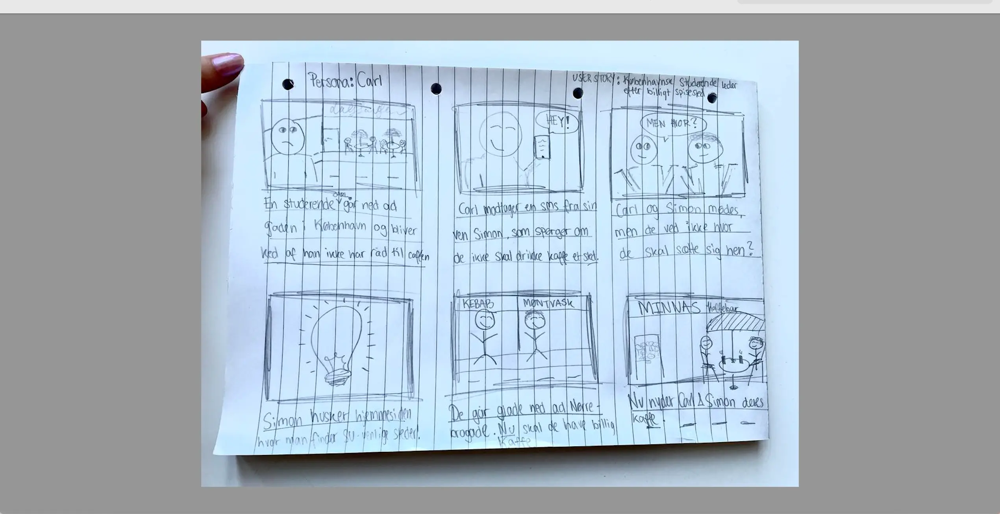

Tema 3 - UX/UI
Temabeskrivelse
Dette tema var opdelt i fire sektioner: "Research og idé", "Digital prototype", "Kodet site" og "Præsentation". Temaet har bidraget til en grundlæggende forståelse af samspillet mellem brugere og brugergrænseflader. Det inkluderede også en indsigt i teorier, værktøjer og metoder, der kan anvendes i forskning, design og test i forbindelse med digital produktudvikling. Vi fik erfaring med udvalgte UX-metoder samt lærte, hvordan man præsenterer et produkt og formidler resultater fra research og test. For at udvikle vores eget website baseret på vores koncept, skulle vi først udføre forskellige former for research, herunder interviews og observationsopgaver. Vi gennemførte inspirationssøgning og indsnævrede derefter vores idé til grafiske analyser såsom sketching, storyboards, moodboards, style-tile og wireframes til digital prototype. I denne proces blev vi introduceret til Figma, hvor vi kunne samle vores indsigter og videreudvikle vores designproces.
Hvad har jeg tilegnet mig?
- UX/UI konventioner, prototyping, usability og testing
- Research metoder
- Figma
- CSS Selectors
- Grafisk analyse
- User stories
- Copy og Microcopy
- Favicon
- Brugertests
Afleveringer
- 03.01.01 Research og idé
- 03.02.01 Digital Prototype
- 03.03.01 Kodet site
- 03.04.01 Præsentation
- 03.04.02 Procesdokumentation
Proces - Sparegrisen
Research
Solution Sketch


Storyboard
Moodboard & Styletile
Fra wireframes til digital prototype
Test af site

03.03.01 Kodet site - Research og dataindsamling
Vi begyndte med at udvikle vores individuelle koncepter til hjemmesider og gik derefter i gang med forskning ved hjælp af metoder som desk-research, observation og interview. Desk-research var en måde at samle viden og undersøge allerede eksisterende hjemmesider, med det formål at videreudvikle min idé i næste trin. Jeg besluttede mig for at lave en mad- og kaffeguide for SU-studerende i København, altså et inspirationssite. Efterfølgende besøgte jeg "Studenterhuset" i Indre By for at udføre min observation baseret på AEIOU framework-strukturen. Jeg observerede, at blandt unge var der en udbredt interesse for at besøge caféer og studere enten alene eller i selskab med jævnaldrende, hvilket styrkede min idé om at skabe et hjælpsomt site til denne målgruppe. Til sidst i min forskningsproces interviewede jeg en 22-årig CBS-studerende ved navn Josefine. Jeg dokumenterede mine overordnede indsigter fra både observation- og interview-delen. Disse metoder bidrager til at give en mere fysisk og kvalitativ dimension til dataindsamlingen, hvilket kan give indblik i menneskers adfærd i specifikke miljøer og deres holdninger.
03.03.01 Kodet site - Designproces og digital prototype
I designprocessen blev vi introduceret til forskellige metoder til at skitsere. Vi lærte blandt andet om Crazy 8's Sketch og Solution Sketch. I min Solution Sketch fokuserede jeg på at skitsere min "Best of the Bros" og "Top 3" side, da jeg havde mest usikkerhed om, hvordan disse skulle se ud. Efterfølgende hang vi alle vores Solution Sketches op i klassen, så vi kunne give hinanden feedback ved hjælp af små post-its og klistermærker, som blev placeret på vores favorit elementer. Dette skabte grundlag for at fortsætte designprocessen med udgangspunkt i min indsamlede data og feedback fra medstuderende.
Efterfølgende åbnede vi Figma, hvor jeg lærte at skabe moodboards og style-tiles. Mit style-tile gav mig et klart overblik over de visuelle konventioner, som mit site skulle følge, herunder typografi, farver, knapper, ikoner, logo osv. Samtidig udarbejdede jeg mit moodboard, der hjælper med at formidle æstetikken. Jeg begyndte med at udvælge nøgleord, der kunne formidle budskabet, en blanding af både rationelle og emotionelle aspekter. I forbindelse med moodboardet udviklede jeg også et tilhørende storyboard, der kan beskrives som et modelleringsværktøj, da det hjælper med at skabe brugerscenarier, definere begrænsninger og træffe beslutninger. Mit storyboard præsenterede mit koncept som en løsning på karakterens problem og imødekom i sidste ende hans behov.
Efter at have udviklet det ovenstående, indledte vi processen med wireframes og digital prototype. Wireframes hjælper med at etablere en enkel struktur i monokrome farver uden konkret indhold. Baseret på disse wireframes integrerede jeg al mit indhold i form af tekst og billeder i min prototype. Afslutningsvis tilkoblede jeg prototypen et flow, der gjorde den interaktiv og klar til en tænke-højt-test.
03.03.01 kodet site - test
Tænke-højt-testen blev udført i undervisningen i mindre grupper, hvor tre gruppemedlemmer skiftedes til at have forskellige roller. Én person styrrede testpersonen og instruerede dem i, hvordan de skulle navigere på sitet ved hjælp af opgaveskabelonen. Den tredje person tog noter om testpersonens tanker, som de udtrykte højt. Gennem denne proces indsamlede jeg en række indsigter, som efterfølgende blev brugt til at optimere brugervenligheden af mit site. For eksempel gjorde jeg "Opret min bruger"-knappen væsentligt større i menuen og organiserede mine sider på en mere brugervenlig måde. Til slut i forløbet blev vi introduceret for en anden testmetode kaldet "Lighthouse". Her gennemførte jeg en inspektion af mit site og fik tal på dets funktionalitet og præstation. For eksempel førte denne test til optimeringer, da jeg komprimerede billederne til webp-format, hvilket reducerede deres størrelse betydeligt.